Explore Samar's Premier Spots
From serene beaches and multi-tiered rainforest waterfalls to heritage monuments, choose your adventure and add it to your trip.
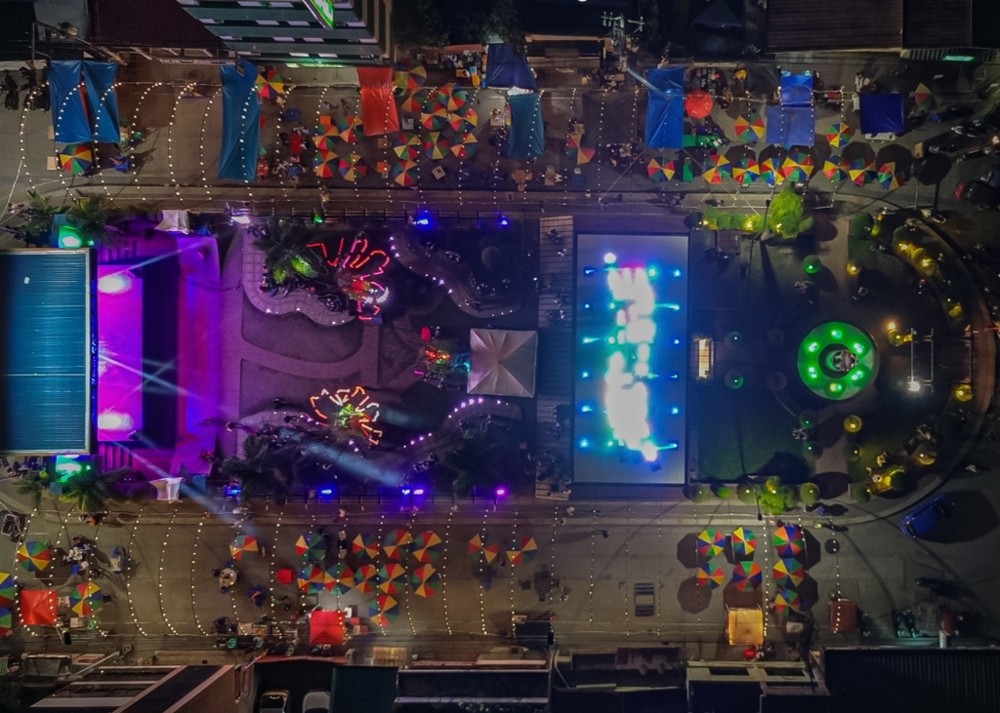
Civic & HeritageCity Plaza
Considered to be the heart of the city, its proximity to the City Hall, as well as being the site of various historical and cultural properties,make this the perfect place of convergence of everything that truly represents the City of Catbalogan.
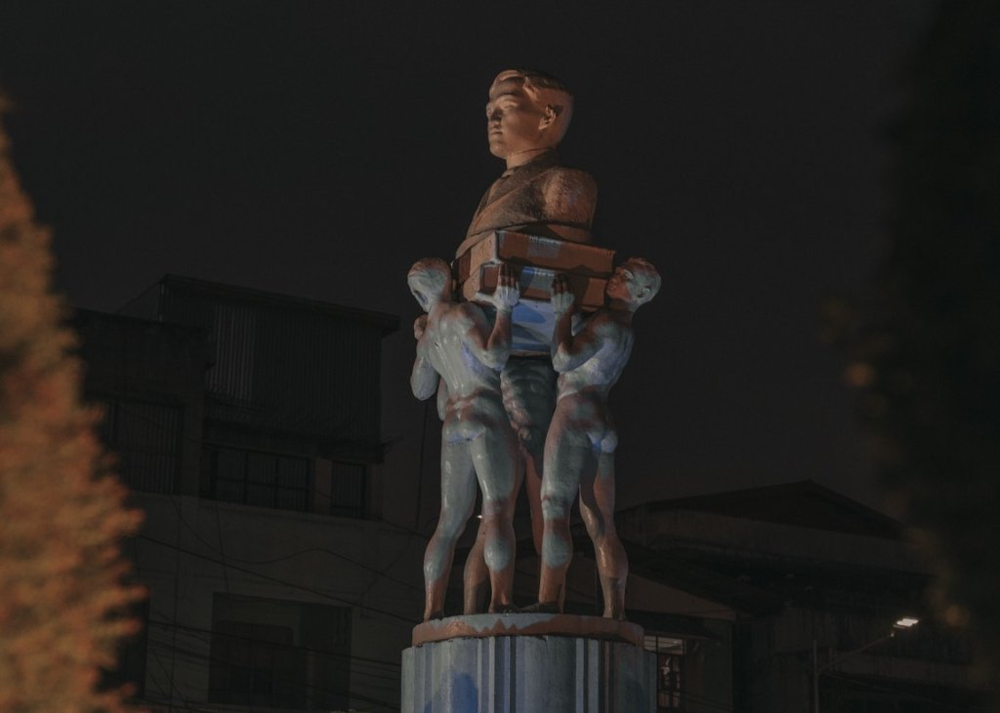
MonumentRizal Statue
By far one of the most unique depictions of our national hero, this masterpiece shows a bust of Dr. Jose Rizal placed on top of the Noli Me Tangere and El Filibusterismo while being hoisted by three naked men. Being created by local artist Miguel Alcazar serves as the connection that makes it a most beloved legacy for Catbaloganons.
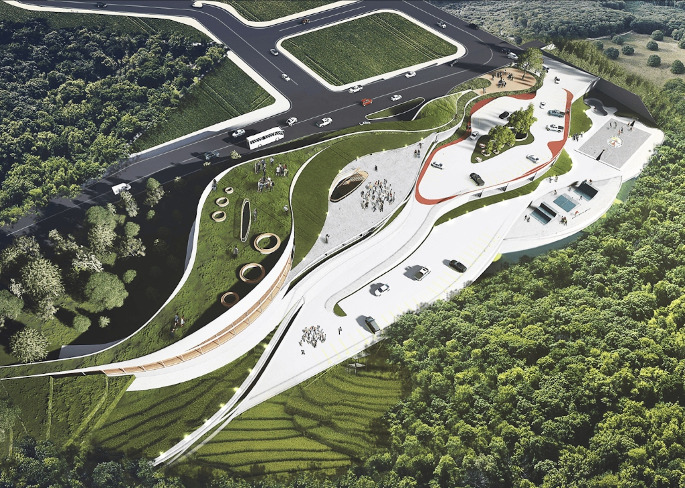
Eco-TownshipCatbalogan Sky City
The Catbalogan Sky City Mega Project is a township bundled project through multi-nuclei model of expansion with an area of 440 hectares and 120 meters above sea level positioned to be a resilient, inclusive and sustainable city through localization of the national and global agenda.
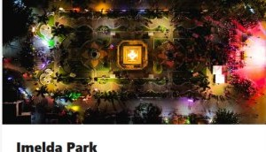
Public ParkImelda Park
Named after the former First Lady Imelda Marcos, the park offers various amenities such as a small stage, a gazebo, a food park and a play area for children. A renovation last 2020 brought forth several changes that make the park even more appealing to both children and adult visitors.
Samar Provincial Capitol
Built during the 1930s in the neoclassical style of architecture, this white two-storey building is just as enduring as the ancient Roman and Greek temples that it took inspiration from.
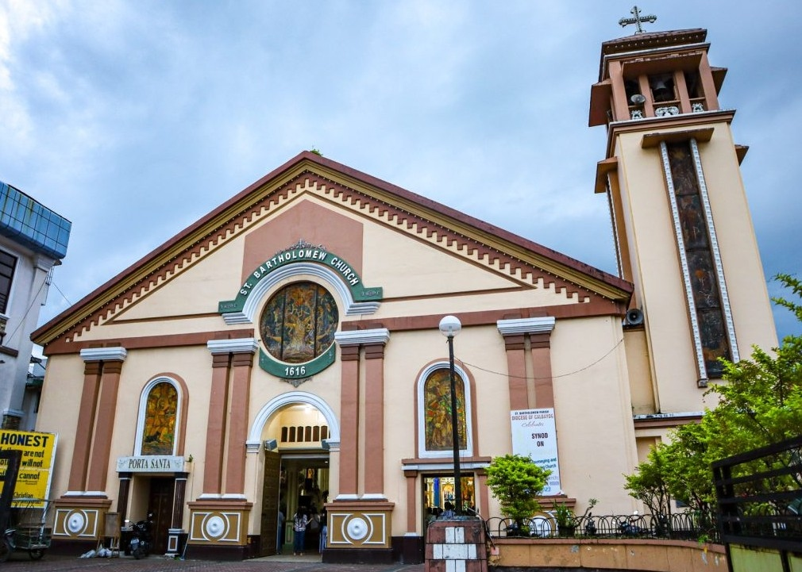
Faith & HistorySaint Bartholomew Church
Established in 1616 by Jesuit missionaries to serve as its mission center, this served as the earliest roots of the city's placement as the cabecera of the entire island of Samar. Most importantly, this church serves as a symbol of the people's unwavering faith and reverence
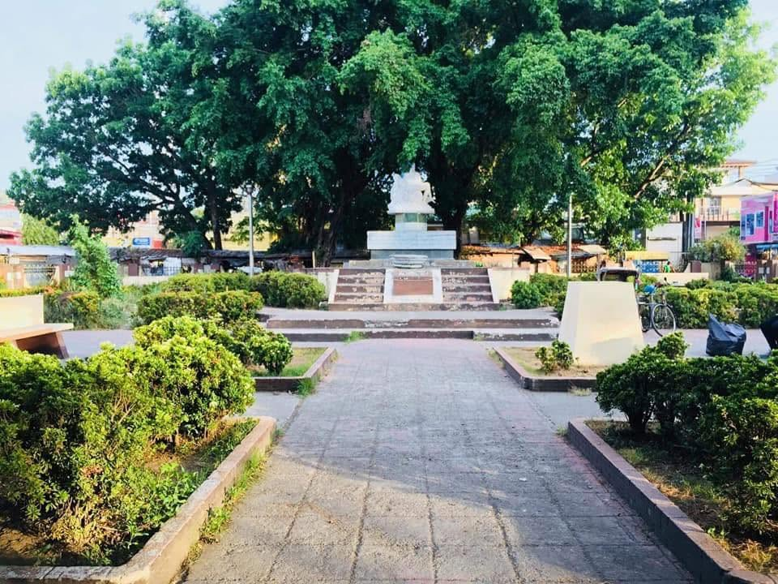
MemorialPieta Park
In Catbalogan, just across the century-old church of Saint Bartholomew is a memorial park dedicated to honor the Catbaloganons who perished in the December 20, 1987 tragic collision of the passenger ship MV Doña Paz and the oil tanker MT Vector
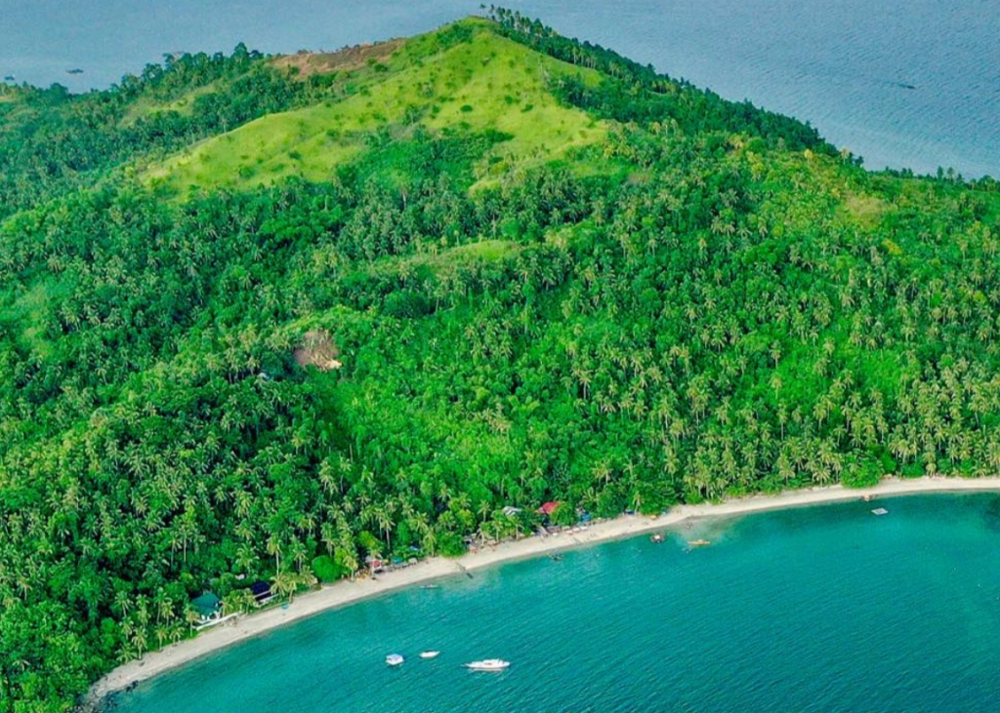
Beach & CoveBuri Baras Beach
With its pristine waters and the breathtaking natural cove around it, the Buri Baras Beach is the ultimate go-to for those seeking some sun, sand and sea, whether it is for a much-needed me time or for some fun with family and friends
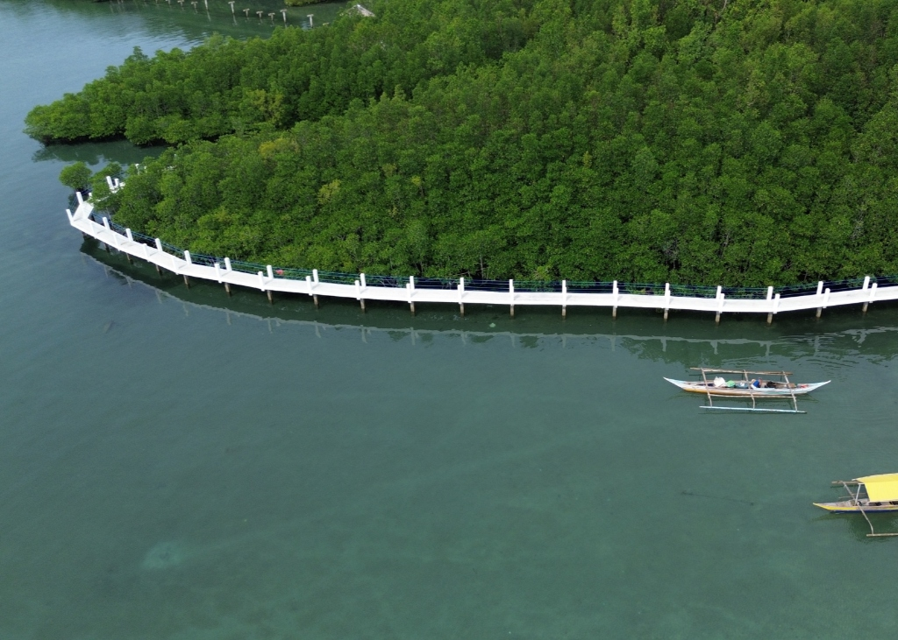
Mangrove Eco-ParkCabugawan Eco Park
Starting out with a 3-hectare mangrove area and three gazebos, the Cabugawan Eco Park continues to thrive both as a scenic spot as well as an ecological/educational park. Under the management of a community-based tourism organization, the park has since expanded its coverage so that more mangrove areas can be protected and to be able to cater to more tourists.
 Island
Island
Buri Island Boardwalk
Experience the longest wooden footbridge in the country, turquoise seas, and golden sunset panoramas over Samar Sea.
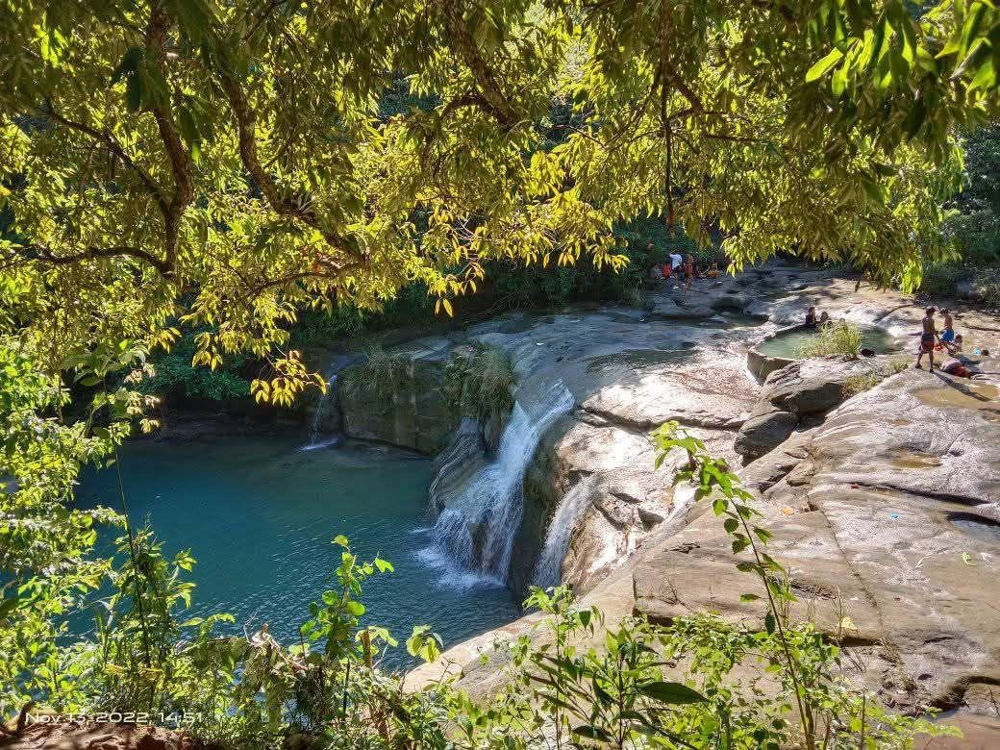
WaterfallBangon Falls
A magnificent cascade tucked in deep virgin rainforest with natural rock pools perfect for eco-trekkers.
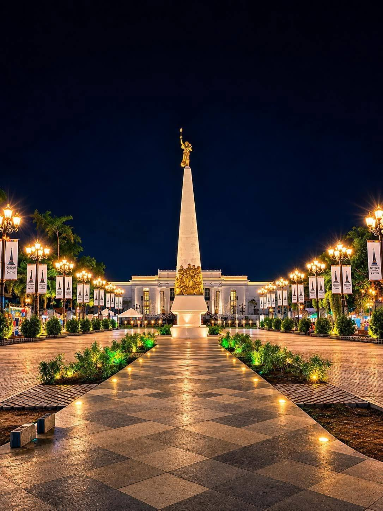
HeritageThe Obelisk
Towering monument at the city square illustrating four defining eras of Samar's bravery and heritage.
Darahuway Guti Island
Pristine coral sanctuaries, secluded coves, and scenic trekking bluffs overlooking Eastern Visayas waters.
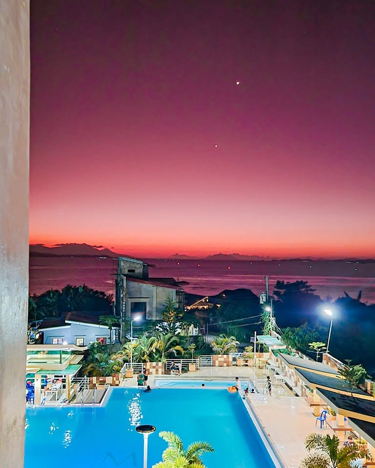
Scenic VistaMaqueda Bay Sunset
Renowned as one of the most picturesque sunset viewing spots in the Visayas along the Catbalogan boulevard.
My Trip Planner
Saved items for your Catbalogan trip:
Manaragat Festival Highlights
Details